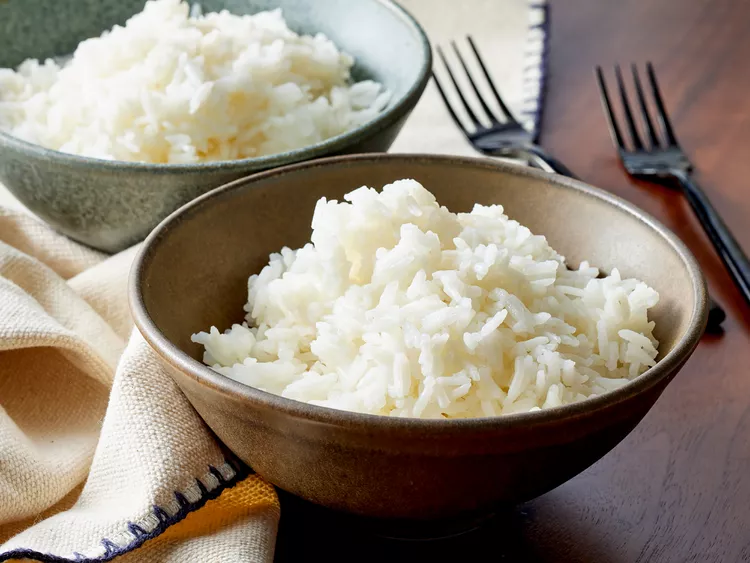

Rice

“Jasmine rice stands out with its unique and irreplaceable flavor and smell,” according to recipe developer Kathryn Hendrix. “Once you perfect cooking jasmine rice, it's lackluster to go back to any other white rice.”
Serve this homemade jasmine rice with curries, stir fries, or any of your favorite Thai dishes. For delicious inspiration, explore our collection of 17 Favorite Side Dishes Featuring Fragrant, Fluffy Jasmine Rice.
Ingredients
- 1 cup jasmine rice
- 1 cup water
- 1/2 teaspoon salt
Steps
- Gather all Ingredients.
- Place rice in a fine-mesh strainer. Rinse rice with cold water until water runs clear. Drain completely.
- Add rice, 1 1/4 cups water, and salt to a medium saucepan.
- Bring to a boil over medium-high heat.
- Reduce heat, cover, and simmer for 10 minutes, or until water is absorbed. Remove from heat and let stand, covered, for 10 minutes.
- Fluff rice with a fork before serving.
Home